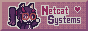
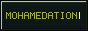
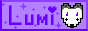
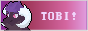
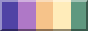
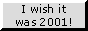
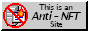
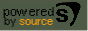

Welcome traveller, to this little place in the ever-growing internet. I'm Luna, internet cat, developer and collector of interests :3
This website serves as a hub for my endless ideas and sidequests. I have everything you'd expect a indie website to have, and more! Expect rants, reviews of the world's most random shit and whatever else I decide to dump on this website!!
Is something broken? Try refreshing your cache with Ctrl + Shift + R. If
that
doesnt work, send me an E-Mail or @ me on Mastodon pretty please!
i update this website whenever i remember that I have a website
About Me
Name: Luna
Age: 21
Gender: Female (she/it)
Sex: god i wish,
Identity: Furry (Cat), Therian (Cat) and Cat-lover (Cat)
Interested in: Pansexual or Tech, depending on what you were asking about (though I guess robotgirls
fit
for both)
Fav artists:
- wishlane (👑)
- saoirse dream
- HYPERPUP
- Geyebelle Gaburgably
- Kendrick Lamar
- Skrillex
- Die Antwoord
- Cyborg9K
- I Prevail
Contact: luna[at]netcat.systems
feel free to send me feedback, ideas, or just say hi!
Website To-Do's
I will get to these at some point. This list isn't sorted by priority or anything, but in general I prioritize accessibility and fixes over new stuff
- Rework old blog posts (ew)
- Add pages for OCs
- Add page for fav artists
- collect cool new badges and remove boring ones
- optimize the mobile layout more
Buttons

Made by the lovely Spikiii. Feel free to use it on your website, please don't hotlink it though.

← Catppuccin webring → |
Friends and cool ppl!   Cool Buttons!    |
|---|